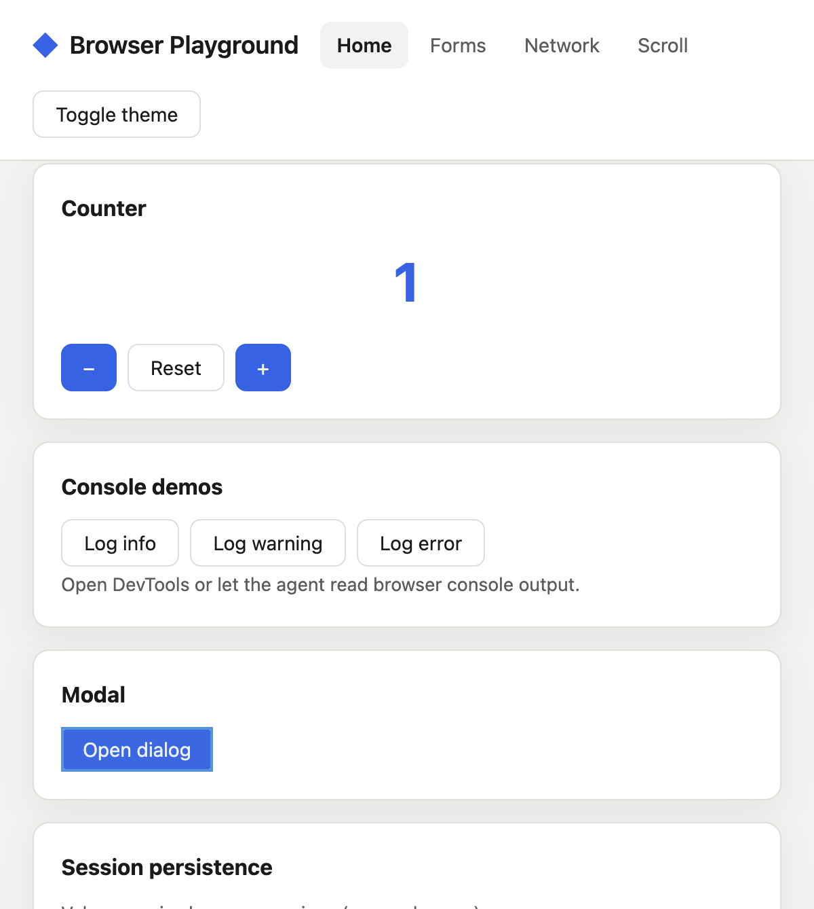
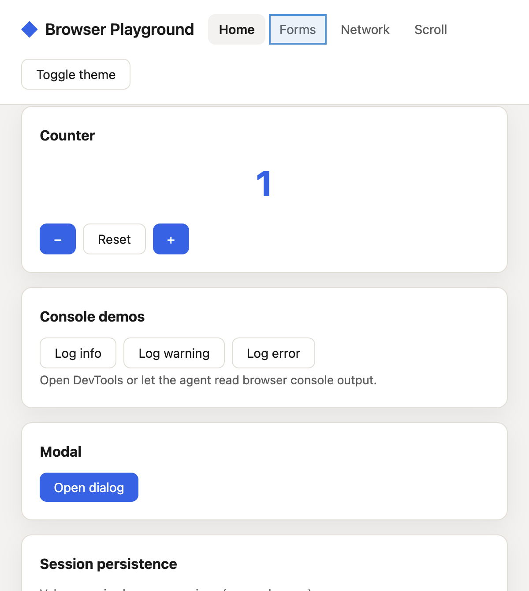
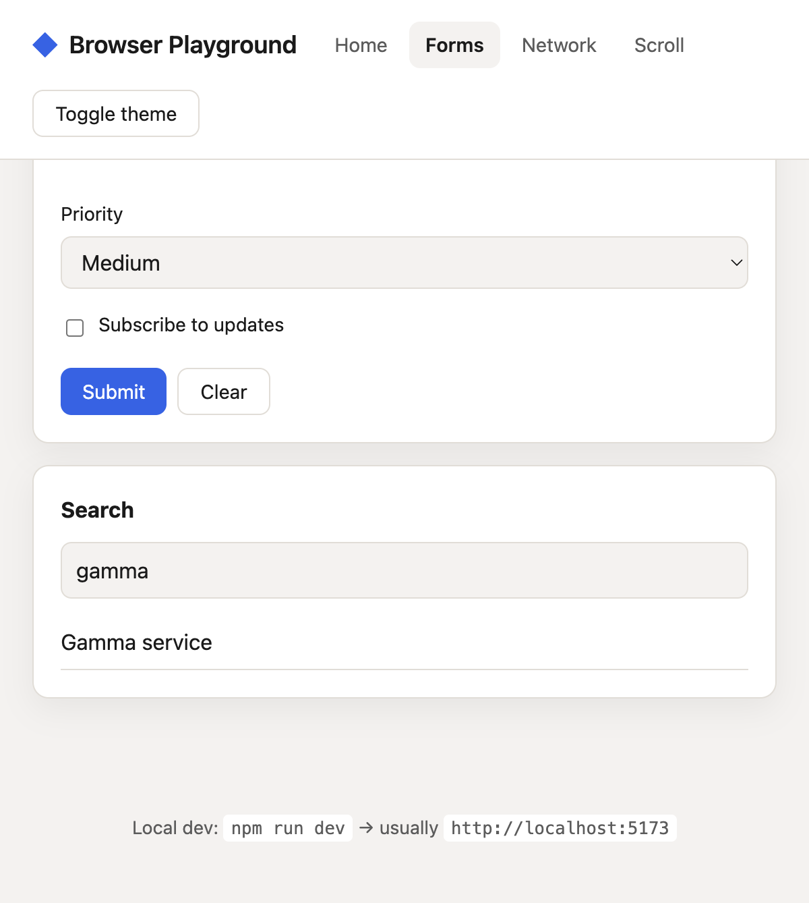
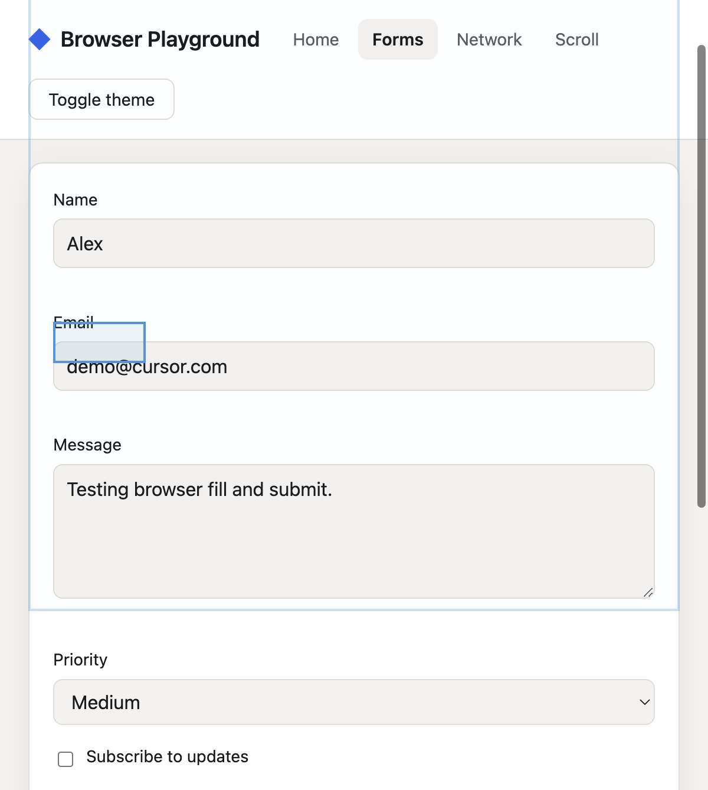
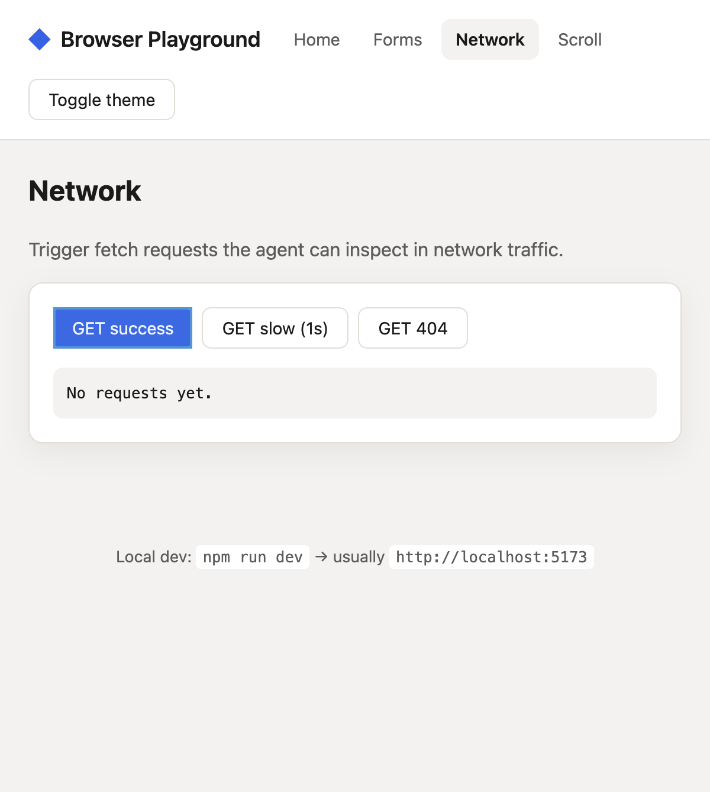

Screenshots from an automated walkthrough of the playground app at
http://localhost:5173, using Cursor’s browser tools (click,
fill, navigate, scroll, screenshot).
1. Home — Counter
01-home-counter.png
The Home tab with the interactive counter. The agent
clicked the + button; the value shows 1 in
blue (styled via .counter-value). Also visible: console demo
buttons, the modal trigger, and session persistence.
Tools: click, screenshot
Panel: Home
Home — counter after increment
2. Home — Modal
02-home-modal.png
After clicking Open dialog. The native
<dialog> may not always appear in the screenshot viewport,
but the click and focus state were exercised for modal testing.
Tools: click
Panel: Home

Home — modal interaction
3. Forms — Before fill (nav quirk)
03-forms-empty.png
Taken while switching to Forms. The URL changed to
#forms before hash-based panel switching was fixed, so the
screenshot still shows Home. This led to adding a
hashchange listener in src/main.js.
Tools: click (nav), navigate
Note: fixed in app — hash navigation now syncs panels

Navigation edge case (since fixed)
4. Forms — Filled & search
03-forms-filled.png
The Forms panel with fields filled via
browser_fill: name, email, message, and search filter
gamma narrowing the list to Gamma service.
Tools: fill, type
Panel: Forms

Forms — filled inputs and live search
5. Forms — Submitted
04-forms-submitted.png
After clicking Submit with valid data. Shows the full
contact form (Alex, demo@cursor.com, message text) ready for validation /
success messaging.
Tools: click (submit)
Panel: Forms

Forms — after submit click
6. Network — Fetch panel
05-network-fetch.png
The Network tab with GET buttons for success, slow, and
404 responses. The agent clicked GET success; external
APIs may not complete inside the embedded browser, so the output can stay
at “No requests yet.”
Tools: click, network (when available)
Panel: Network

Network — fetch controls
7. Scroll — Long content
06-scroll-blocks.png
The Scroll tab after scrolling down through numbered
blocks. Used to test browser_scroll and viewport /
full-page screenshots.